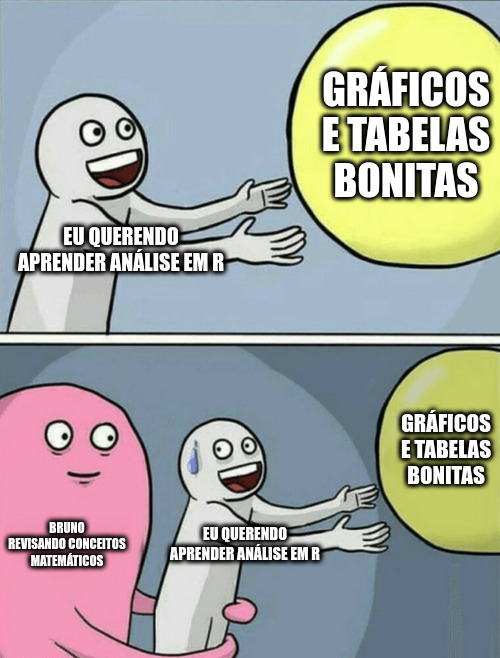
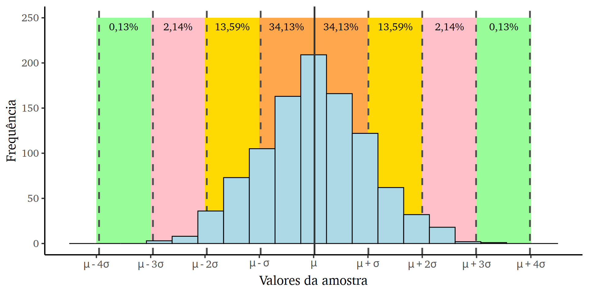
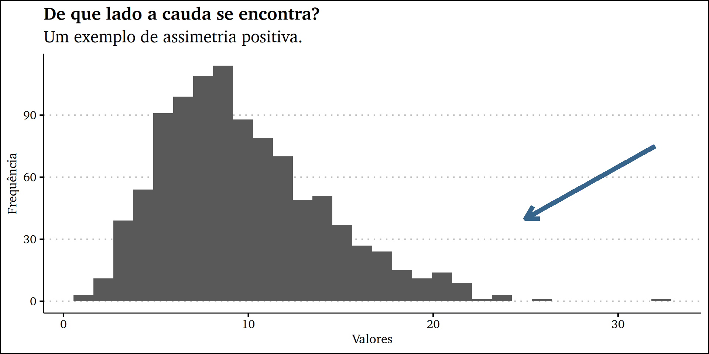
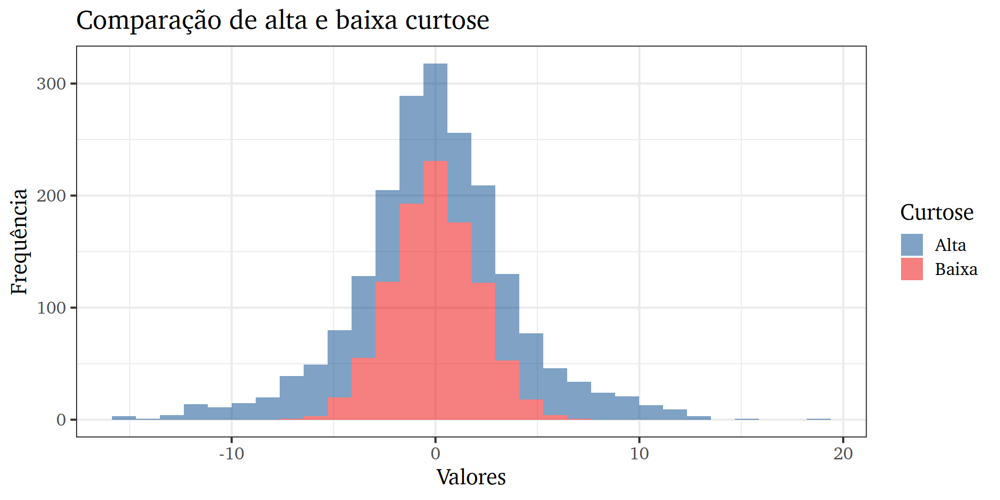
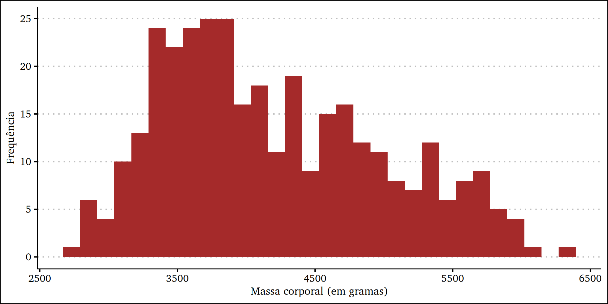
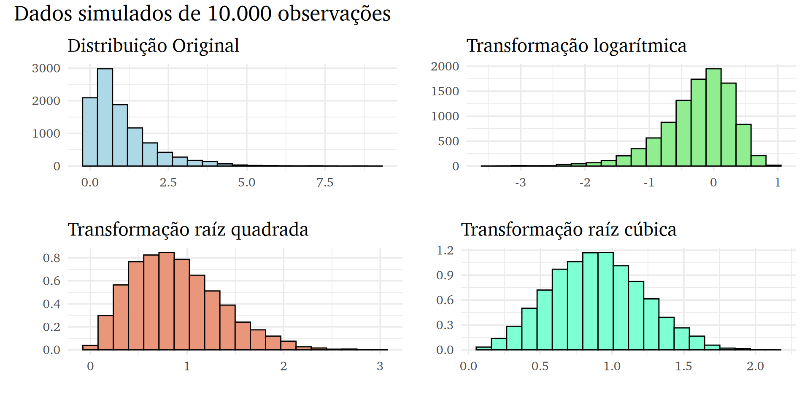
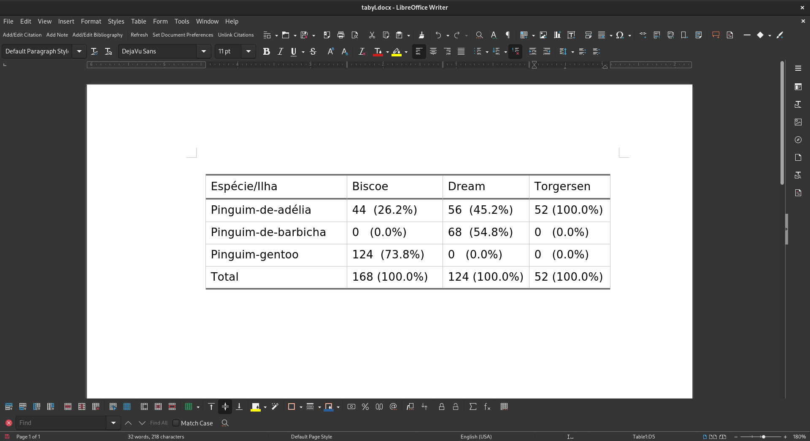

Rows: 344
Columns: 8
$ especie <fct> Pinguim-de-adélia, Pinguim-de-adélia, Pinguim-de…
$ ilha <fct> Torgersen, Torgersen, Torgersen, Torgersen, Torg…
$ comprimento_bico <dbl> 39.1, 39.5, 40.3, NA, 36.7, 39.3, 38.9, 39.2, 34…
$ profundidade_bico <dbl> 18.7, 17.4, 18.0, NA, 19.3, 20.6, 17.8, 19.6, 18…
$ comprimento_nadadeira <int> 181, 186, 195, NA, 193, 190, 181, 195, 193, 190,…
$ massa_corporal <int> 3750, 3800, 3250, NA, 3450, 3650, 3625, 4675, 34…
$ sexo <fct> macho, fêmea, fêmea, NA, fêmea, macho, fêmea, ma…
$ ano <int> 2007, 2007, 2007, 2007, 2007, 2007, 2007, 2007, …Análise descritiva
Aula 4
Bruno Montezano
Grupo Alliance
Programa de Pós-Graduação em Psiquiatria e Ciências do Comportamento
Universidade Federal do Rio Grande do Sul
22 de maio de 2023
Conteúdo de hoje
- Medidas de tendência central
- Medidas de dispersão
- Medidas de assimetria e curtose
- Testes de normalidade
- Transformação de dados
- Tabelas de frequência
Dados dos pinguins
Hoje nós usaremos os dados dos pinguins do pacote dados.
Este conjunto de dados contém 14 variáveis de 344 observações de pinguins adultos perto da Estação Palmer na Antártida.
Os dados incluem a espécies de pinguins e ilhas do Arquipélago Palmer, medidas de cada espécie, sexo do pinguim e ano de documentação.

Olhadinha nos pinguins
Revisão de conceitos matemáticos
Variáveis
Variáveis são símbolos que representam conjuntos de um ou mais elementos que podem assumir qualquer quantidade de valores.
- Letras como \(x\), \(y\) e \(z\) são comumente usadas para indicar variáveis
- Por exemplo: \(x = 3\)
- Letras maiúsculas (\(X\)) ou letras com um índice (\(x_i\)) referem-se a variáveis com múltiplos valores — ou seja, com dimensões
- Por exemplo: \(X = x_i = (15, 16, 32)\)
- Variáveis com uma dimensão (comprimento) são chamadas de vetor
- Variáveis como \(x_i\) são usadas para indexar elementos de vetores
- \(i\) é uma variável que indica a posição indexada
- Por exemplo: \(x_1 = 15, x_2 = 16, x_3 = 32\)
Somatório
\[\sum_{i=1}^{n}x_i\]
Dado \(x = [9, 12, 12, 14, 27]\):
\[\sum_{i=1}^{n}x_i = x_1 + x_2 + x_3 + x_4 + x_5 = 9 + 12 + 12 + 14 + 27 = 74\]
Medidas de tendência central
Média
A média (aritmética) é o valor esperado de uma variável.
\[\bar{x} = \frac{1}{n}\sum_{i=1}^{n}x_{i}\]
Se você extrair elementos aleatoriamente dessa variável, a média seria o chute menos errado que você poderia fazer sobre esse valor1.
Dito de outra forma, as diferenças positivas e negativas entre todos os valores e a média equivalem entre si.
Mediana
O valor para o qual não mais da metade dos valores é superior ou inferior1.
A mediana tem essa fórmula esquisita:
\[m(x_i) = \begin{cases} x_{\frac{n+1}{2}},& \text{se } n \text{ ímpar}\\ \frac{1}{2}(x_{\frac{n}{2}} + x_{\frac{n}{2} + 1}), &\text{se } n \text{ par}\end{cases}\]
Moda
A moda é o valor mais frequente na variável.
Existem fórmulas para a moda, mas elas não são nada intuitivas, apesar da moda ser a medida de tendência central mais intuitiva.
Vocês podem usar count() para ver a frequência de valores:
Valores extremos
A média é sensível a valores extremos:
Isso significa que a mediana pode ser uma “média” mais útil quando os dados têm valores extremos.
Isto é comum com variáveis como renda e números de episódios auto-relatados.
Medidas de dispersão
Variância
A variância mede como os dados estão dispersos em torno da média. Normalmente usamos a variância amostral:
\[ s^2 = \frac{\sum (x_i - \bar{x})^2}{n - 1} \]
Se todos os valores são iguais, a variância é zero.
Desvio padrão
O desvio padrão (\(s\) ou \(sd\), ou \(dp\) em português) é simplesmente a raíz quadrada da variância:
\[s = \sqrt{s^2}\]
Você pode interpretar como a distância “típica” dos valores em relação à média.
O desvio padrão se apresenta na mesma unidade de medida da variável.
Amplitude
A amplitude (\(R\)) é a medida de dispersão mais fácil de calcular. Nós subtraímos o menor valor (\(L\)) do maior valor (\(H\)) da variável.
\[R = H - L\]
Intervalo interquartil
O intervalo interquartil representa a diferença entre o primeiro quartil (o 25º percentil) e o terceiro quartil (o 75º percentil) de um conjunto de dados.
\[IQR = Q_3 - Q_1\]
Em termos simples, o quão distantes estão os 50% valores do meio da variável.
pinguins |>
filter(!is.na(massa_corporal)) |>
summarise(
intervalo_interquartil_massa = IQR(massa_corporal),
primeiro_quartil = quantile(massa_corporal)["25%"],
terceiro_quartil = quantile(massa_corporal)["75%"]
)# A tibble: 1 × 3
intervalo_interquartil_massa primeiro_quartil terceiro_quartil
<dbl> <dbl> <dbl>
1 1200 3550 4750Distribuição normal
A distribuição normal é uma das distribuições mais importantes em estatística.
- Também conhecida como distribuição de Gauss, é frequentemente usada para modelar fenômenos naturais
- Muitos testes estatísticos assumem que os dados seguem uma distribuição normal
- 68% dos dados estão dentro de um desvio padrão da média, 95% estão dentro de dois desvios padrão e 99,7% estão dentro de três desvios padrão

Testes de normalidade
Em muitos casos, é necessário verificar se uma amostra segue uma distribuição normal antes de aplicar determinados testes estatísticos.
- O teste de Shapiro-Wilk é um teste de normalidade que verifica se uma amostra segue uma distribuição normal
- A hipótese nula (\(H_0\)) do teste é que a amostra segue uma distribuição normal
- Se o \(p\)-valor do teste for menor do que o nível de significância (geralmente 0,05), rejeita-se a hipótese nula e conclui-se que a amostra não segue uma distribuição normal
Assimetria
A assimetria mede o quão assimétrica é uma distribuição. Pode assumir valores positivos ou negativos. A média, mediana e moda em geral não são iguais em distribuições assimétricas
- Uma assimetria negativa indica que a cauda está no lado esquerdo da distribuição
- Uma assimetria positiva indica que a cauda está no lado direito da distribuição
- Um valor de zero indica que não há assimetria na distribuição
Exemplo de distribuição assimétrica
Curtose
Curtose é a medida da forma da distribuição em relação à sua média.
- A curtose de uma distribuição normal é 3
- Se uma dada distribuição tem uma curtose menor que 3, ela é chamada de platicúrtica
- Se uma dada distribuição tem uma curtose maior que 3, diz-se que é leptocúrtica
Quanto maior a curtose, maior a propensão a outliers.
Visualizando a curtose
Medidas de assimetria e curtose
Tanto a assimetria quanto a curtose podem ser calculados com funções do pacote moments.

Transformação de dados
Em alguns casos, os dados podem apresentar distribuições muito distorcidas, o que pode afetar a validade dos testes estatísticos aplicados.
Para resolver esse problema, uma solução comum é aplicar uma transformação aos dados para deixá-los mais próximos de uma distribuição normal.

Transformando a massa_corporal
Tabelas de frequência
O pacote janitor oferece uma função tabyl() para produzir tabulações e tabulações cruzadas, que podem ser modificadas para exibir porcentagens, proporções, etc.
Funções de enfeite do janitor
| Função | Desfecho |
|---|---|
adorn_totals() |
Adicionar totais. |
adorn_percentages() |
Converter contagens para proporções. |
adorn_pct_formatting() |
Converte proporções para porcentagens. |
adorn_rounding() |
Arredondar proporções com digits =. |
adorn_ns() |
Adicionar contagens a uma tabela de proporções ou porcentagens. |
adorn_title() |
Adicionar título da linha e coluna. |
Exemplos de tabela cruzada
pinguins |>
tabyl(especie, ilha) |>
adorn_totals(where = "row") |>
adorn_percentages(denominator = "col") |>
adorn_pct_formatting(digits = 1) especie Biscoe Dream Torgersen
Pinguim-de-adélia 26.2% 45.2% 100.0%
Pinguim-de-barbicha 0.0% 54.8% 0.0%
Pinguim-gentoo 73.8% 0.0% 0.0%
Total 100.0% 100.0% 100.0%pinguins |>
tabyl(especie, ilha) |>
adorn_totals(where = "row") |>
adorn_percentages(denominator = "col") |>
adorn_pct_formatting() |>
adorn_ns(position = "front") |>
adorn_title(
row_name = "Espécie",
col_name = "Ilha") Ilha
Espécie Biscoe Dream Torgersen
Pinguim-de-adélia 44 (26.2%) 56 (45.2%) 52 (100.0%)
Pinguim-de-barbicha 0 (0.0%) 68 (54.8%) 0 (0.0%)
Pinguim-gentoo 124 (73.8%) 0 (0.0%) 0 (0.0%)
Total 168 (100.0%) 124 (100.0%) 52 (100.0%)pinguins |>
tabyl(especie, ilha) |>
adorn_totals(where = "row") |>
adorn_percentages(denominator = "col") |>
adorn_pct_formatting() |>
adorn_ns(position = "front") |>
adorn_title(
row_name = "Espécie",
col_name = "Ilha",
placement = "combined") |>
flextable::flextable() |>
flextable::save_as_docx(path = "tabela_especie_ilha.docx")
Tarefa de casa
- Para a tarefa de casa, vamos seguir usando a base
pinguinsdo pacotedados.
- Filtre a base para manter apenas as observações do ano de 2009.
- Escolha uma variável contínua da base de dados e verifique se ela segue uma distribuição normal através de um histograma e um teste de normalidade de Shapiro-Wilk.
- Independentemente da distribuição, crie uma variável transformada (a partir da que você escolheu) através do método da raíz quadrada (função
sqrt()), da raíz cúbica (lembre-se do operador^) ou do log (funçãolog10()). Você também pode criar um histograma da variável transformada.
- Lembre-se da função
mutate()para criar ou modificar colunas.